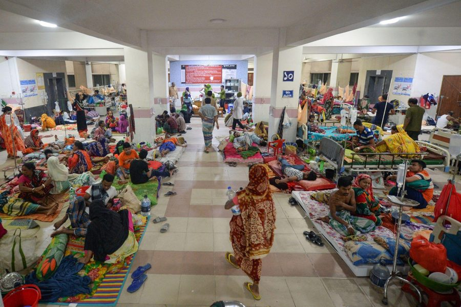
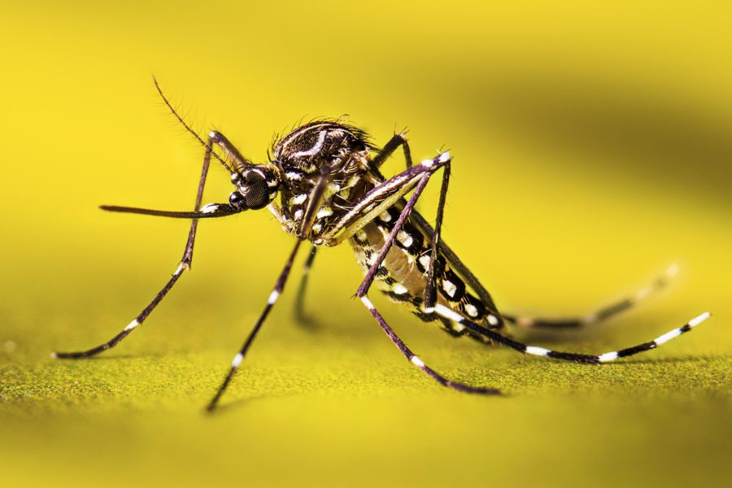
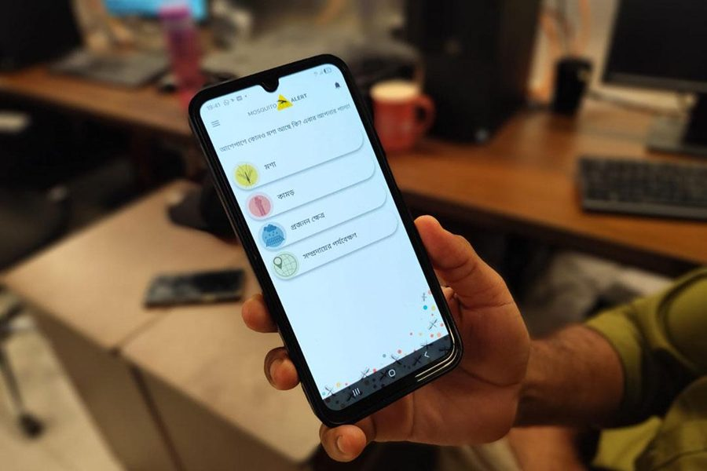
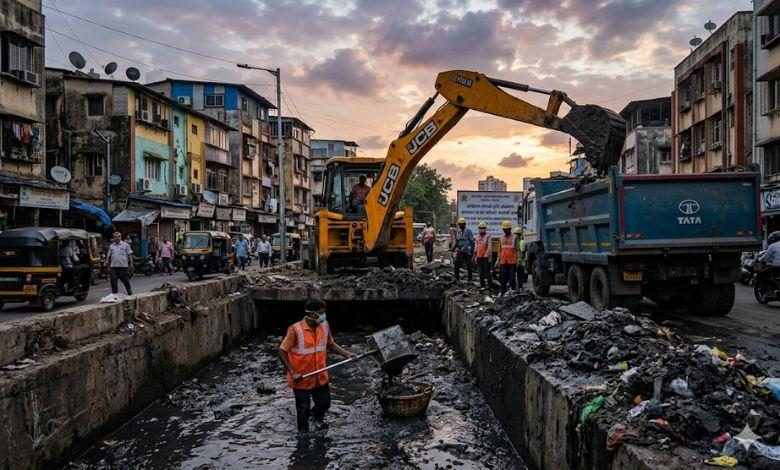
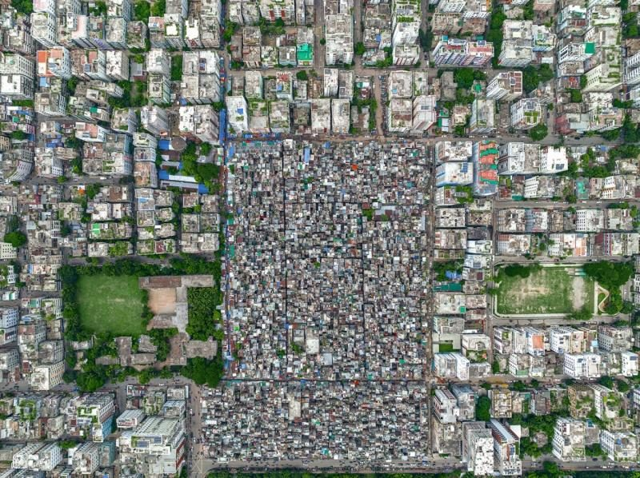
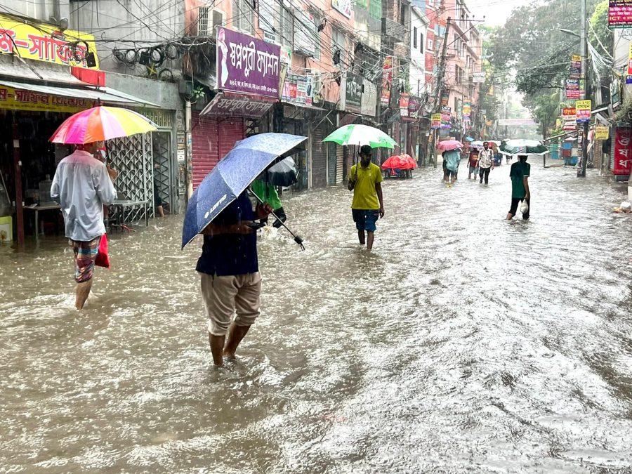

See dengue outbreaks weeks before they peak.
Dengue Protirodh forecasts risk for every ward 2–4 weeks ahead, using weather lags, ward vulnerability and gradient-boosted trees — so health teams can act while there is still time to clear breeding sites.
Ranked ward risk · +3 week window
Why early warning matters
Dengue cases rise weeks after the rain, but spraying and larvicide teams usually move only after hospital admissions climb. Bridging this 2–4 week window saves lives.
hospitalizations in peak seasons
- Monsoon surges hit Dhaka, Chattogram and Khulna
- Hospitals stretched past capacity

from rain to hospital spike
- Eggs mature in 7–14 days
- Virus then incubates in mosquitoes and people

- That delay is our window to act

same rain, different risk
- Drainage and waste clearance

- Population density

- Water-logging

Built for decision-makers & field responders
An integrated public-health ecosystem combining offline predictive modeling with field community action.
Ranked Risk Board & GIS Map
Ward-by-ward triage table, risk treemap, and interactive weekly heatmaps filtered by City Corporation.
Ward Deep-Dive & Drivers
Historical trends, rainfall correlation curves, and factor contribution breakdowns for targeted intervention.
What-If Climate Scenarios
Simulate abnormal rainfall spikes (+150%), heatwaves, or humidity shifts to stress-test hospital capacity.
Transparent Validation
Strict chronological validation on held-out 2024–25 data with 91% tier accuracy and 80% prediction intervals.
Community Action & Events
Rally volunteers for source reduction, drain clearing, free platelet camps, and neighborhood sweeps.
Private & Offline Edge Inference
Runs 100% locally in browser memory (<50ms) without cloud dependencies, external trackers, or data leakage.
From rainfall to ranked wards
Mosquito eggs take 7–14 days to hatch and emerge, followed by the incubation period of the dengue virus. By modeling rainfall delays up to 7 weeks back, Dengue Protirodh forecasts weekly cases 2, 3 or 4 weeks ahead for 60 wards across 5 city corporations, before symptoms appear.
- Weather dataRain, heat, humidity, cases
- Lag featuresPast weeks of rain and heat
- AI forecastPredicts cases 2–4 weeks ahead
- Risk tiersEvery ward ranked Low to Critical
- Early actionTeams clear breeding sites early
Read weather history
Builds features for each ward from rainfall lags of 0–7 weeks, rolling 2/4/8-week sums, temperature and humidity lags, and the last 4 weeks of cases. Only data known at the warning week is used.
Score every ward
Gradient-boosted decision trees combine weather with ward vulnerability (population density, water-logging, sanitation) to forecast expected weekly cases, with an 80% prediction band.
Rank, triage and mobilize
Wards are ranked and placed in Low, Medium, High or Critical tiers, each with a recommended response plan and a CSV export for field teams.
What each risk tier asks you to do
Every ward gets a tier and a recommended action in the dashboard.
Routine surveillance. Keep weekly larvae checks and community awareness running.
Pre-position larvicide and clear drains in this ward; brief clinics on case definition.
Deploy larvicide and fogging teams within 7 days; reserve beds, saline and test kits.
Emergency response: door-to-door source reduction now, surge beds and saline, daily case reporting.
Explore the forecast for your city
Pick a city corporation, slide the warning date and see which wards need attention first.
Prevention
The prevention game plan: It is about what households and ward teams can do once a forecast says risk is rising.
- 1Empty and scrub containers weeklyBuckets, tyres, pot saucers and coolers. Scrubbing removes eggs that survive drying.
- 2Cover tanks, keep drains flowingTight lids and cleared drains leave Aedes nowhere to breed.
- 3Protect people, test earlyNets and repellent by day and night. Fever with body ache? Get tested early.
Tested on data it never saw
Strictly chronological split: train 2016–2022, validate 2023, test 2024–2025. No shuffling, so no future leakage.
- Beats both baselines at every horizon (persistence and seasonal ward-month average)
- 93.2% coverage on 80% prediction bands at +3 weeks, so the bands err on the cautious side
- MAE 1.02 cases per ward-week at +3 weeks
Insights & Research Blogs
Deep-dive articles, vector biology breakdowns, and clinical video guides on dengue mitigation in Bangladesh.
Community events & action drives
Mobilizing boots on the ground: volunteer for neighborhood cleanups, fever screening clinics, school workshops and larvae elimination sweeps across Bangladesh.
Ward 11 & Mirpur Source Reduction
Door-to-door rooftop inspections, flowerpot emptying and drain unblocking with DNCC health inspectors.
Free Platelet & Antigen Screening
Lalbagh Thana Health Complex fever triage, on-site CBC and NS1 antigen tests for Old Dhaka residents.
Chattogram Port & Canal Cleanup
Consolidated industrial tire disposal and culvert de-silting campaign in Agrabad commercial corridor.
About Dengue Protirodh
A ward-level early-warning tool that gives health teams a few weeks' head start on dengue. It forecasts risk for 60 wards in 5 city corporations, runs privately in your browser and is built for decision support, not diagnosis.
Developed by
Tamzida Mahmud
CSE Student · East Delta UniversityZafnun Hosney Uddin
CSE Student · East Delta UniversityZoya Zubairi Fiza
CSE Student · East Delta UniversityQuestions
What does the forecast tell me?
The expected number of dengue cases per ward per week, 2–4 weeks ahead, with an 80% range and a risk tier. It guides where to send teams first. It does not diagnose individuals.
Which data does it use?
The hackathon dataset: 60 wards in 5 city corporations, 31,320 weekly records from 2016 to 2025, covering weather, ward vulnerability and reported cases. You can also upload your own weekly CSV.
Does my data leave my computer?
No. Everything runs in your browser, with no server, no API call and no LLM at prediction time.
How accurate is it?
On the held-out 2024–2025 test years, R² is 0.73 at +3 weeks and 0.61 at +4 weeks, so longer warnings are less certain. The Model validation tab shows every metric.
Can I test "what-if" weather scenarios?
Yes. In the dashboard's What-If Simulator, you can adjust rainfall, temperature, and humidity sliders to see how projected ward risk and expected cases change compared to the baseline.
How can I share a dengue story or join community drives?
You can submit your own dengue experience or prevention story on the Story submission page, or join neighborhood cleanups and screening clinics listed in Community events.
Stay in the Know
Get dengue risk updates, new features and prevention tips from Dengue Protirodh by email. Occasional messages only, and you can unsubscribe at any time.
Contact
Questions, feedback or want to try Dengue Protirodh with your own ward data? We would like to hear from you.
References
News reports on Bangladesh's 2025 and 2026 dengue seasons and recent updates on vaccines and care, and the videos featured on this site. Read summaries and share them on the News page.
News articles
- The Daily Star. “Dengue in 2025: July the deadliest month so far” The Daily Star, 25 Jul 2025. https://www.thedailystar.net/node/3947961 (accessed 22 Nov 2026)
- Khaleej Times. “Bangladesh dengue outbreak surges; 4 dead, 1,558 hospitalised in last 24 hours” Khaleej Times (photo: AFP), 7 Sep 2026. https://www.khaleejtimes.com/world/asia/bangladesh-dengue-outbreak-surges-september-2026 (accessed 22 Nov 2026)
- Reuters. “Bangladesh sees worst single-day surge in dengue deaths” Dawn (Reuters), 22 Sep 2025. https://www.dawn.com/news/1943788/bangladesh-sees-worst-single-day-surge-in-dengue-deaths (accessed 22 Nov 2026)
- The Financial Express. “Dengue hospitalisations top 45,000 in 2025” The Financial Express (Bangladesh), 27 Sep 2025. https://thefinancialexpress.com.bd/national/dengue-hospitalisations-top-45000-in-2025 (accessed 22 Nov 2026)
- Faisal Mahmud. “Bangladesh may be headed into another deadly dengue season – unprepared” Scroll.in, 16 May 2026. https://scroll.in/article/1092877/bangladesh-may-be-headed-into-another-deadly-dengue-season-unprepared (accessed 22 Nov 2026)
- News On AIR. “Bangladesh: 11 dengue deaths reported in a single day; overall 400 fatalities in a year” News On AIR (All India Radio), 27 Oct 2026. https://newsonair.gov.in/bangladesh-11-dengue-deaths-reported-in-a-single-day-overall-400-fatalities-in-a-year/ (accessed 22 Nov 2026)
- Prothom Alo. “100 ‘hotspots’ in North, 29 wards at high risk in South” Prothom Alo English edition, 20 Sep 2026. https://en.prothomalo.com/bangladesh/uiwruqtl4p (accessed 22 Nov 2026)
- Reuters. “Bangladesh considers dengue vaccine trials as outbreak worsens” TimesLive (Reuters), 6 Oct 2026. https://www.timeslive.co.za/news/world/2026-10-06-bangladesh-considers-dengue-vaccine-trials-as-outbreak-worsens/ (accessed 25 Nov 2026)
- The Daily Star. “Govt to consult experts on dengue vaccine trials: State minister” The Daily Star, 13 Oct 2026. https://www.thedailystar.net/news/healthcare/disease/news/govt-consult-experts-dengue-vaccine-trials-state-minister-4297691 (accessed 25 Nov 2026)
- Gulf Today. “Dengue fever claims 418 lives in Bangladesh amid warnings of continued outbreak” Gulf Today (citing Reuters), 1 Nov 2026. https://www.gulftoday.ae/news/2026/11/01/dengue-fever-claims-418-lives-in-bangladesh-amid-warnings-of-continued-outbreak (accessed 25 Nov 2026)
- Xinhua. “Bangladesh's dengue death toll tops 500” Xinhua, 16 Nov 2026. https://english.news.cn/asiapacific/20261116/13c4df00767245a1bc989b45e3ee7534/c.html (accessed 25 Nov 2026)
- FE Report. “Govt hospitals offering all dengue tests for free” The Financial Express (Bangladesh), 18 Nov 2026. https://thefinancialexpress.com.bd/health/govt-hospitals-offering-all-dengue-tests-for-free (accessed 25 Nov 2026)
- Business Standard. “Takeda gets DCGI nod for QDENGA, India's first dengue vaccine” Business Standard (India), 20 Jul 2026. https://www.business-standard.com/companies/news/takeda-gets-dcgi-nod-for-indias-first-dengue-vaccine-qdenga-126072000569_1.html (accessed 25 Nov 2026)
- TBS Report. “Dengue: Death toll at 526 as 2 more die” The Business Standard (Bangladesh), 25 Nov 2026. https://www.tbsnews.net/bangladesh/dengue-death-toll-526-2-more-die-1613641 (accessed 25 Nov 2026)
Videos
Videos featured on our Videos page. Each belongs to its publisher; they are general information, not medical advice.
- WHO South-East Asia. “Dengue symptoms and care” [Video] YouTube. https://www.youtube.com/watch?v=p3kZjyTxisk (accessed 25 Nov 2026)
- UCLH, London. “Signs and symptoms of dengue fever” [Video] YouTube. https://www.youtube.com/watch?v=P-_hqG9HKj8 (accessed 25 Nov 2026)
- “Dengue timeline: from day 0 to recovery” [Video] YouTube. https://www.youtube.com/watch?v=_mo-vJDBm8Y (accessed 25 Nov 2026)
- WHO South-East Asia. “Reducing mosquito breeding sites” [Video] YouTube. https://www.youtube.com/watch?v=TbMCxl8YXTk (accessed 25 Nov 2026)
- “Dengue: what you can do in your neighbourhood” [Video] YouTube. https://www.youtube.com/watch?v=Fixp7OAYFfA (accessed 25 Nov 2026)
- “Stop dengue with B-L-O-C-K” [Video] YouTube. https://www.youtube.com/watch?v=FlnuB7tkUe4 (accessed 25 Nov 2026)
- “Mosquito breeding sites at home” [Video] YouTube. https://www.youtube.com/watch?v=ws-xG2c1MnQ (accessed 25 Nov 2026)
- “Bangladesh reels under rising dengue cases” [Video] YouTube. https://www.youtube.com/watch?v=DDs0mPokNPc (accessed 25 Nov 2026)
- Associated Press. “Dengue outbreak kills hundreds in Bangladesh” [Video] YouTube. https://www.youtube.com/watch?v=2JShyaZ29uo (accessed 25 Nov 2026)
- “Dengue surge overwhelms Khulna hospitals” [Video] YouTube. https://www.youtube.com/watch?v=RlKbPbBwwBI (accessed 25 Nov 2026)
- FRANCE 24. “Bangladesh faces a deadly dengue surge” [Video] YouTube. https://www.youtube.com/watch?v=kVClV02Th0Q (accessed 25 Nov 2026)
- Protidiner Bangladesh. “ডেঙ্গু: ২৪ ঘণ্টায় ৪ জনের মৃত্যু, হাসপাতালে ভর্তি ১৫১২” [Video] YouTube. https://www.youtube.com/watch?v=LsR9YH9CQUI (accessed 25 Nov 2026)
- “A dengue survivor’s true story” [Video] YouTube. https://www.youtube.com/watch?v=wX4710MynWg (accessed 25 Nov 2026)
- Medicover Hospitals. “Patient story: dengue and typhoid” [Video] YouTube. https://www.youtube.com/watch?v=Ep1A2RNrDDQ (accessed 25 Nov 2026)
- “Baby recovers from severe dengue” [Video] YouTube. https://www.youtube.com/watch?v=YiRNBX65Ebo (accessed 25 Nov 2026)
- Grecian Hospital. “Amrik Singh’s dengue recovery” [Video] YouTube. https://www.youtube.com/watch?v=qB1aV0YgdhE (accessed 25 Nov 2026)
- Park Grecian Hospital. “Overcoming dengue: a journey to recovery” [Video] YouTube. https://www.youtube.com/watch?v=RNz_nF-3hKY (accessed 25 Nov 2026)
- Medicover Hospitals. “Patient recovers from dengue in 3 days” [Video] YouTube. https://www.youtube.com/watch?v=2RWhrKuMjJ0 (accessed 25 Nov 2026)
- “Inside Singapore’s mosquito factory” [Video] YouTube. https://www.youtube.com/watch?v=GGiCO_4EqoU (accessed 25 Nov 2026)
- “Inside Singapore’s Wolbachia breeding facility” [Video] YouTube. https://www.youtube.com/watch?v=j2hCDqBU_Qs (accessed 25 Nov 2026)
Privacy Policy
Dengue Protirodh is engineered as a privacy-by-design, offline-first tool. Your data, calculations, and uploads never leave your device.
Last updated: 25 November 2026
Summary & Core Privacy Principles
Dengue Protirodh computes all predictive models locally inside your browser memory. We operate with zero third-party telemetry, no commercial advertising trackers, and no remote machine learning inference servers.
Data Processing & Edge Inference
- Bundled Epidemiological Records: The historical dataset of 31,320 records across 60 wards is packaged locally with static application files.
- User CSV Uploads: When you upload custom weekly surveillance data, it is parsed locally by browser memory APIs. It is never transmitted across the network, logged on external servers, or persisted beyond your active browser session.
- Predictions & Report Downloads: All CSV exports, risk summaries, and scenario stress-tests are assembled and generated directly on your client hardware.
What We Do Not Do
- No unauthorized cookies, no canvas fingerprinting, and no hidden tracking scripts.
- No third-party analytics pixels, ads, or data-broker integrations. Social links are direct HTML anchors.
- No cloud LLM inference or server-side data processing during prediction operations.
- Zero sharing or sale of user interactions. If you choose to RSVP for an event or register for a webinar, your records are saved locally on your device in standard web storage.
Storage & Preferences
Dengue Protirodh uses local storage strictly for functional application preferences:
- dg_theme: Remembers your chosen Dark or Light interface appearance.
- dg_lang: Stores your preferred display language (English or Bengali).
- dg_consent: Records your cookie banner preference (strictly first-party, stored for 180 days).
- Community & Webinar Registrations: Keeps track of event RSVPs and forum contributions locally so you can manage your participation.
Third-Party Content Loading
All core computational code, styling, and charts (Plotly.js) load offline from local files without external requests. If you view optional news photographs or click Play on embedded YouTube educational videos, those specific media assets load directly from their respective source publishers with privacy-enhanced controls.
Contact & Data Rights
For privacy inquiries or data requests, contact our team at team@dengueguard.example.
Terms of Use
Please review the terms of service governing the use of Dengue Protirodh.
Last updated: 25 November 2026
1. Acceptance of Terms
By accessing, deploying, or utilizing Dengue Protirodh, you agree to comply with and be bound by these Terms of Use. If you do not accept these terms, you should discontinue use immediately.
2. Scope of Service & Purpose
Dengue Protirodh is designed for municipal authorities, city corporations (DNCC, DSCC, CCC, KCC, GCC, RCC), public-health researchers, and community organizations to optimize resource allocation (larviciding, door-to-door inspections, fogging, and clinic bed reservations) 2 to 4 weeks prior to dengue hospitalization surges.
3. Predictive Model Limitations
- Forecasts represent statistical probabilities derived from historical weather patterns, lag features, and ward vulnerability indexes. They are predictive estimates, not guarantees of infection counts.
- Extreme weather anomalies, sudden unseasonal flash floods, or drastic unreported chemical spraying may alter real-world transmission dynamics compared to model predictions.
- Longer forecast horizons (+4 weeks) inherently exhibit wider variance bands than shorter windows (+2 weeks). Users should always consult the 80% prediction interval.
4. Community Features & User Contributions
Users who list local events, publish community tips, or organize cleanup drives agree to submit truthful, safe, and lawful information. Do not disclose private medical records, patient names, or sensitive personal phone numbers in public community discussions.
5. Intellectual Property & Open Access
Dengue Protirodh was created for hackathon evaluation and public-health benefit. All codebase elements, open documentation, and scientific architectures are provided under open academic standards for non-commercial educational and public safety deployment.
- The model learns from past data and may miss new situations, such as a new virus serotype, changes in reporting or unusual weather.
- Risk tiers and recommended actions are general guidance. Local health authorities should make the final decisions.
Your responsibilities
- Use the tool lawfully and only with data you are permitted to use.
- Do not upload data that identifies individual patients.
- Check important decisions against other sources and professional judgment.
No warranty
The tool is provided “as is” and “as available”, without warranties of any kind, express or implied, including accuracy, reliability, fitness for a particular purpose or non-infringement.
Limitation of liability
To the fullest extent permitted by law, the creators of Dengue Protirodh are not liable for any loss, damage or harm arising from the use of, or inability to use, the tool or its forecasts.
Intellectual property and licenses
The source code and data are provided for hackathon evaluation purposes only, as stated in the README. Plotly.js is bundled under its own MIT license. The Dengue Protirodh name and logo may not be used to suggest endorsement without permission.
Changes
We may update these terms. Continued use after the date above means you accept the updated terms.
Contact
Questions about these terms: team@dengueguard.example or the Contact section. See also our References and Privacy Policy.